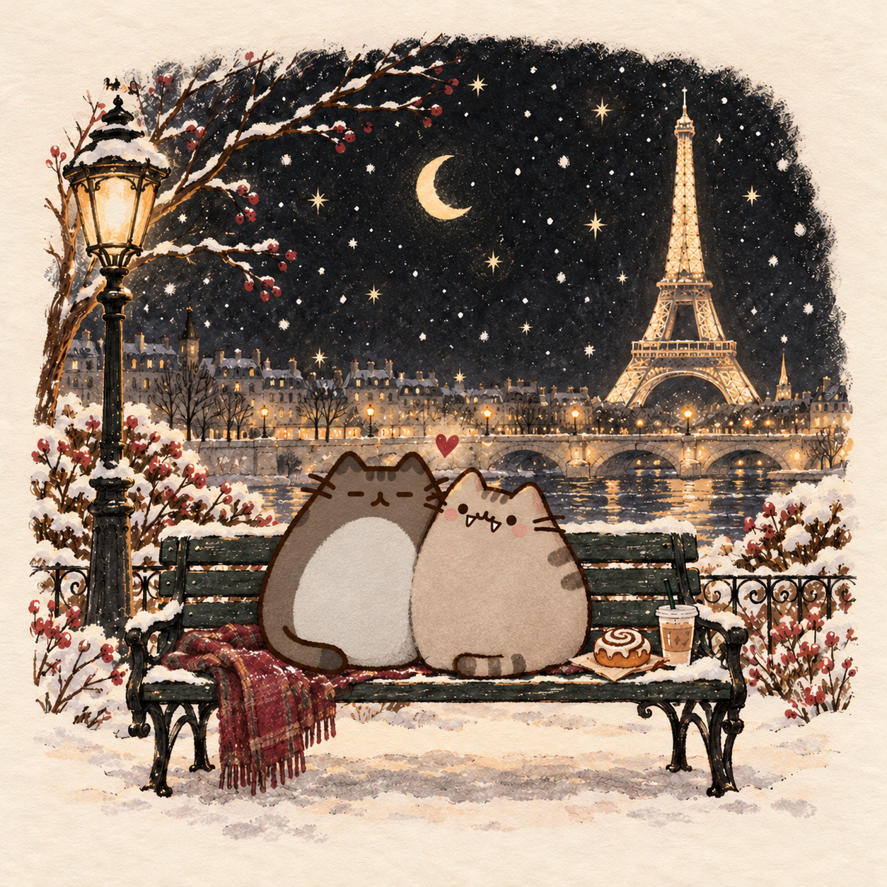

Маша, это всё
ради тебя.
С нашим «неким праздником».
Повод немного загадочный.
А вот моя любовь к тебе — совершенно точно нет.
Твой Максим.

11.10
AVEC AMOURдля моего ко ♡
Всё, что ты любишь.
И кое-кто, кто любит тебя.
У твоего мира особенный вкус.
Я собрал его по маленьким деталям.
Коснись каждой — там кое-что есть.
Самая простая
формула.
Ты любишь математику.
А я люблю тебя.
Вот и всё решение.
Очень-очень. И с каждым днём ещё сильнее.
Короче, бесконечно. ♡
С тобой мне
хорошо.
Эффект
манго.
Когда пишем одновременно одно и то же.
Будто между нашими мыслями
есть маленький секретный провод.
Три переписки. Три продолжения.
Узнаешь нашу волну? За каждый верный ответ — манго.
ВОПРОС 1 / 3
🧡🖤
Это всё было
по-настоящему.
Все эти ситуации происходили в реале.
Наши настоящие переписки.
И тот самый эффект манго.
Письмо
для моего ко.
Ко, открой конверт.
Я хочу тебе кое-что сказать.
Посидеть с тобой на лавочке на моём районе.
Встретить Ярика. И просто побыть рядом.